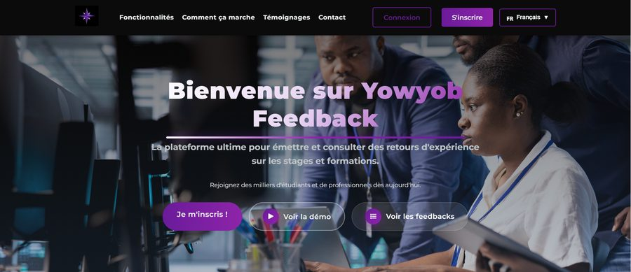

Tous mes Projets Détaillés
Data Science & Intelligence Artificielle

AirSentinel
Prévision de la qualité de l'air à partir des données météorologiques de 42 villes du Cameroun (2024–2026), avec des modèles de gradient boosting (XGBoost et LightGBM) interprétés par SHAP. L'application fournit des prédictions par ville et des conseils de prévention aux populations. 2e place au hackathon IndabaX Cameroun 2026.
Mon rôle : application web et mobile, et API de prédiction et de conseils. La modélisation a été menée par mes coéquipiers statisticiens de l'ISSEA.
XGBoost · LightGBM · SHAP · Next.js · FastAPI

AVA Pro – Agentic Video Analysis
Système multi-agents qui évalue une vidéo YouTube à partir de ses commentaires : collecte de 300 commentaires, filtrage du spam, analyse du sentiment et de la valeur pédagogique par des LLM, puis note de qualité sur 10. Bascule automatique entre Gemini, Qwen 2.5 et DeepSeek.
LangGraph · LLM · Streamlit · API YouTube
LeNet vs ACP – Fashion-MNIST
Comparaison de trois approches de classification d'images sur Fashion-MNIST (10 classes) : un CNN LeNet, une ACP suivie d'un réseau dense, et une approche hybride CNN + ACP. Entraînement sur CPU uniquement, évaluation par rapports de classification et matrices de confusion. L'approche LeNet + ACP obtient les meilleurs résultats.
TensorFlow · Scikit-learn · ACP · CNN
Ophélia – Extraction de documents
Module pour l'ERP Dolibarr qui extrait automatiquement les données de factures, RIB ou KBIS. Un microservice Python combine OCR, un modèle d'IA de compréhension de documents et des règles d'extraction ; chaque champ affiche un score de confiance avant validation humaine.
Tesseract OCR · LayoutLMv3 · Python · PHP
Génie Logiciel & IoT

XCCM2 - eXtended Content Composition Module
Application qui facilite la création, l'organisation et la recomposition de contenus pédagogiques à partir de fragments pré-segmentés appelés granules. Cette approche modulaire rend les contenus réutilisables, favorise le travail collaboratif et accélère la production de ressources pédagogiques numériques.
Mon rôle : développement du backend (API).


OPAID - Compteur d'Eau Prépayé
Compteur d'eau prépayé intelligent basé sur la technologie LoRaWAN, accompagné d'une application mobile : les usagers gèrent leur crédit en autonomie et les administrateurs supervisent l'ensemble des compteurs. Le prototype démontre la faisabilité technique et économique de la solution au Cameroun. 1er prix aux concours AFENSPY et ASPY.
LoRaWAN · Électronique embarquée · Application mobile

Yowyob Feedback
Plateforme permettant aux stagiaires d'une entreprise de partager leurs avis et impressions, construite à partir d'un prototype existant.
Mon rôle : développement du frontend.
TypeScript · Next.js